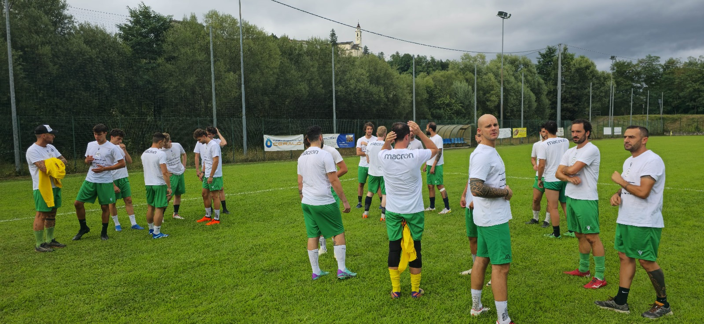
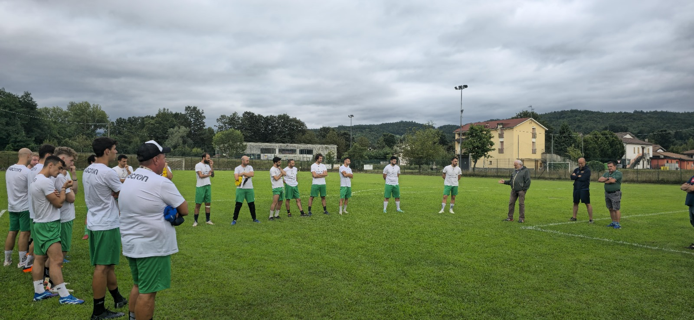

Finalmente è stato reso noto il nostro girone, Parma, C. Un girone molto duro con tante squadre che si
daranno
battaglia in ogni momento della stagione. Tante fazioni si sono rinforzate quest'anno, per questo sarà un
girone
molto equilibrato, sia per le zone alte che per quelle basse della classifica.
Ecco le squadre nel dettaglio:
1. Astra
2. Bardi
3. Calestanese
4. Compiano
5. Eri 96
6. Folgore Futura
7. Fraore
8. Ghiare
9. M.T. 1960
10. Montebello
11. Team Corcagnano
12.Team Crociati
13. Valtarese
14. Vicofertile
19 agosto
Si parte con la preparazione che vedrà i ragazzi impegnati per tre settimane fino alla prima uscita
stagionale: Domenica 8 settembre tra le mura amiche contro l'Eri96 nel secondo turno di Coppa Emilia.
Le sedute di allenamento sono state programmate già qualche settimana fa dal Mister insieme al preparatore
atletico, il Prof. Terzaga.
Non ci resta che mettere la testa bassa e iniziare a pedalare in vista di una stagione molto impegnativa sia
fisicamente che mentalmente.


3 settembre
A pochi giorni dall'uscita del calendario del campionato proviamo ad analizzare quali potranno essere le
partite chiave nell'arco della stagione.
Sarebbe ipocrita non dire che il derby con la Valtarese l'ultima giornata al "Bozzia" non sia il match che
tutti stanno aspettando, d'altro canto però bisogna considerare che ogni partita sarà piena di insidie
e che andrà affrontata ognuna con il massimo dell'impegno e della serità.
Nelle prime cinque partite affrontiamo 3 neopromosse dalla terza categoria, alla seconda giornata siamo di
scena in quel di Bardi, campo sempre molto ostico e avversario difficile da affrontare, in quanto hanno
fatto
un mercato estivo molto importante, facendo capire che per le zone alte della classifica ci sono anche loro.
La prima giornata ci vede di scena tra le mura amiche, dove ospiteremo il Fraore, salvatosi ai playout la
stagione scorsa. Nella parte centrale del campionato affrontiamo due squadre che ci hanno sempre portato
pochissimi punti: Eri96, Folgore. Astra, Moltebello e Ghiare chiudono i due terzi dell'andata.
Team Corcagnano e Team Crociati, neopromosse anche loro, sono delle mine vaganti che creeranno diversi
problemi a tutte le squadre.
Le ultime tre partite prima della sosta natalazia saranno un bel test per capire che campionato vorremo
fare:
Vicofertile, Calestano e Valtarese, tre squadre molto competitive e difficilissime da affrontare.
Sarà un girone molto ostico ed equilibratissimo, dove non si delinea, almeno per il momento, una
corazzata "ammazza campionato". Si parte il 15 settembre a Compiano, noi siamo prontissimi!
Buon campionato a tutti!!!
10 settembre
Sono stati fatti i sorteggi del 2° turno di Coppa Emilia. I nostri prossimi avversari saranno i Team
Crociati, a Felino, mercoledì 25 settembre alle 20:30.